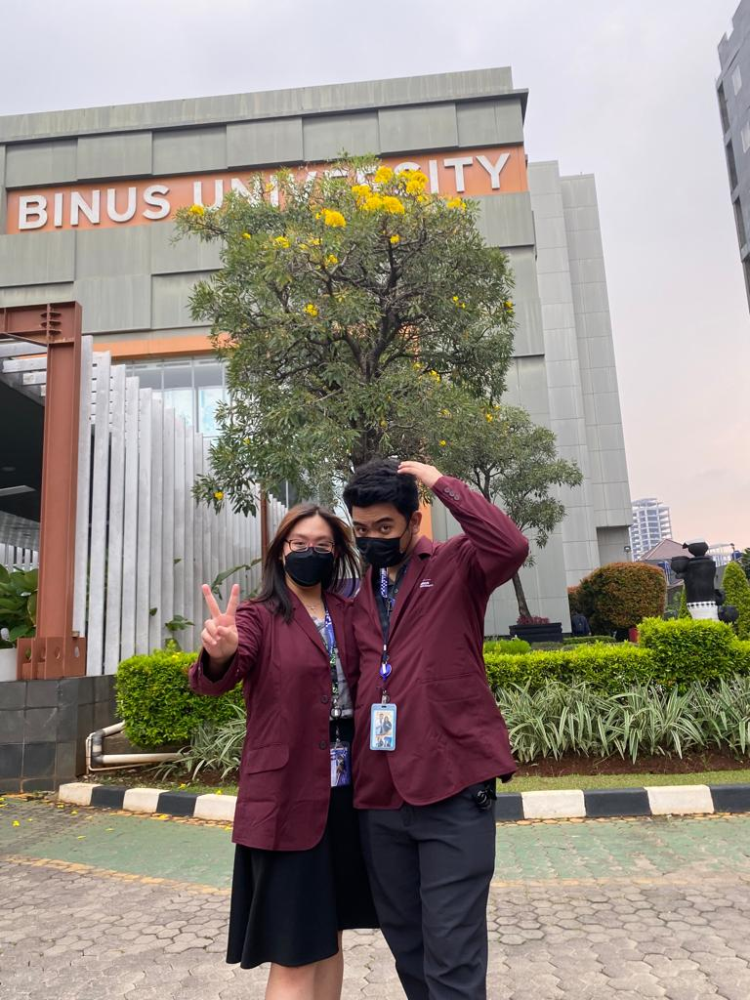

21 November 2022
Ferren Andrea?
Sigemes, Lucu dan imut yang bikin hati dan hari seorang agus
berdebar, walau katanya dia sih pede pede aja soalnya dianya juga
ga sayang dan karena itu malah jadi ga canggung buat makan bareng,
nonton bareng, dan ngobrol bareng. Di balut dalam Kasih dan
Sayangnya Aku sayang kamu

28 September 2022
Ci, Ko cici Cantik Benget sih
Pertama Kalinya kita ke binus dan curahin pengetahuan, ternyata ko
aku jelek nilainya but ga apa, masih utc xixixi tapi akhirnya di
cawu satu ada pengalaman burukku. saat dan setelah itu aku jadi ga
pede lagi buat ngajak kamu ngobrol, tapi kamu tetep aja mau
ngobrol sama aku, dan aku jadi pede lagi buat ngajak kamu ngobrol,
dan akhirnya kita jadi deket. Sampai Kasih hadir di atas kita
berdua.

27 April 2023
Wahh ada yang Tambah Tua
Malam itu aku ngerasa ada yang beda, Aku Minta maaf ya
Ferren Andrea aku sayang kamu dan Untuk Hari
Ulang Tahunmu ini, Aku berharap kamu bisa jadi pribadi yang lebih
baik lagi, lebih dewasa lagi, lebih cantik lagi, lebih lucu lagi,
lebih imut lagi, lebih baik lagi, lebih sayang lagi, lebih sayang
lagi, lebih sayang lagi, lebih sayang lagi tapi Jangan Berlebihan
ya. Aku Berdoa Untuk Kamu dan karenanya aku berdoa untuk kita.
Happy Birthday Ferren Andrea
>